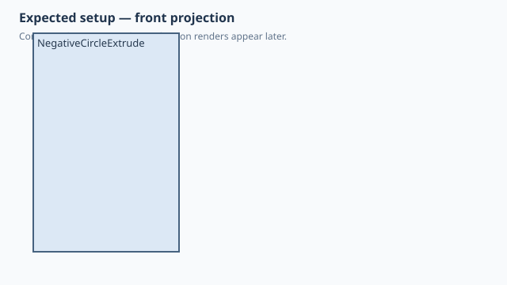

← Qualification / Negative circle profile extrusion
Forge qualification case
NOT RUNQ1 Q2 documented
Negative circle profile extrusion
1. Test setup

Test goal
Qualify direct Circle2D extrusion and an explicitly selected negative extrusion direction with one minimal native model.
Pass criteria
One 20 mm diameter cylindrical body spans X/Y -10..10 mm and Z -30..0 mm, with an error-free saved SolidCraft timeline.
2. Implementation under test
Fixture source
"""Qualification: direct Circle2D extrusion in the negative Z direction."""
class NegativeCircleExtrude:
diameter = 20.0
height = 30.0
def build(self):
return Circle2D(d=self.diameter).extrude(
self.height,
direction=Direction.NEGATIVE,
)
NegativeCircleExtrude()
Public Forge API used
Circle2D(d=20).extrude(30, direction=Direction.NEGATIVE)
Forge model represented by this fixture
One direct circular 2D profile extruded 30 mm along negative Z; no CSG, attachment or explicit Sketch wrapper is involved.
3. Generated SolidCraft relationship
Native XY sketch with one circle followed by solid.extrude(direction='negative').
Show generated relationship / command details
parameters.add
parameters.add
sketch.create
sketch.circle.center
sketch.finish
solid.extrude3. Results
Native result data was not supplied to this site build. Run the native qualification for measured results.
No source-matched native verification was supplied to this site build. The case sheet and command contract are still shown.
6. Evidence and references
Raw evidence
Show generated files and measurements
Reference models
These comparisons clarify concepts; Forge does not promise API compatibility with them.
- OpenSCAD: Comparable to a circle followed by linear_extrude(height=30) after selecting the opposite extrusion direction.
- SolidCraft: The persisted native extrusion direction and measured Z bounds are the source of truth for negative-direction semantics.